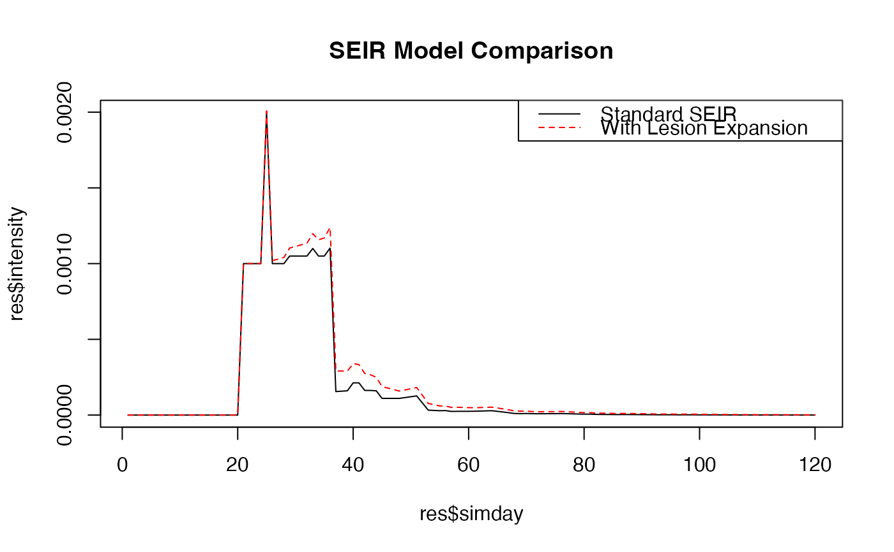

Susceptible-Exposed-Infectious-Removed (SEIR) Model Framework with Lesion Expansion
Source:R/seir.R
seir.RdA dynamical systems model for plant disease epidemiology that tracks disease progression through latent, infectious, and removed stages. Supports flexible aging (day or development stage), lesion expansion, and hourly leaf wetness calculations.
Usage
seir(
wth,
emergence,
onset,
duration,
H0,
I0,
RcA,
RcT,
RcOpt,
p,
i,
Sx,
a = 1,
rhlim = 90,
rainlim = 5,
RRS = NULL,
RRG = NULL,
RcW = NULL,
RRLEX = NULL,
simple_wetness = TRUE,
weighted_wetness = FALSE,
age_driver = c("day", "dvs"),
thermal_time = NULL,
infection_window = NULL
)Arguments
- wth
A
data.frameof classepicrop.wthfromget_wth()orformat_wth()containing daily weather data with columns:Required Columns:
Column Description YYYYMMDD Date (ISO 8601: YYYYMMDD) DOY Day of year (1–366) TEMP Mean daily temperature (°C) RHUM Mean daily relative humidity (%) RAIN Daily rainfall (mm) Optional Columns (for advanced features):
Column Purpose TMIN Minimum daily temperature (°C); required if simple_wetness = FALSETMAX Maximum daily temperature (°C); required if simple_wetness = FALSELAT Latitude; required if simple_wetness = FALSELON Longitude; included in output if present - emergence
Plant emergence (transplanting for rice) date in
YYYY-MM-DDformat (character).- onset
Days until disease onset after emergence date (1-indexed integer). Value of 1 means disease begins on emergence day. When comparing with legacy SEIR(), use
legacy_onset = onset - 1.- duration
Growing season length / simulation duration (integer days). Table 1 in Savary et al. (2012) discusses typical ranges per crop.
- H0
Initial healthy sites (integer). Starting condition for compartment H at emergence. Typically 1000 or proportional to plant canopy size.
- I0
Initial infective sites (integer). Inoculum at
onsetday. Becomes infectious afterpdays.- RcA
Age-based modifier for basic infection rate Rc (numeric matrix). Two-column format:
Column 1: crop age (days 0 to
duration-1ifage_driver="day"; or DVS 0–2 ifage_driver="dvs")Column 2: modifier (0–1, bounded) Tables 1 and 2 in Savary et al. (2012).
- RcT
Temperature modifier for Rc (numeric matrix). Two-column format:
Column 1: temperature (°C)
Column 2: modifier (0–1, bounded) Tables 1 and 2 in Savary et al. (2012).
- RcOpt
Potential infection rate (numeric scalar, unbounded). Rc corrected for removals and optimal conditions. Can be modified to reflect cultivar resistance (see Kim et al. 2015 for details).
- p
Latent period duration (days). Can be:
Integer: constant duration across growing season
Numeric vector: interpolated against age values
Function:
f(TEMP)to calculate latent days based on daily temperature Table 1 in Savary et al. (2012).
- i
Infectious period duration (days). Same flexibility as
p. Table 1 in Savary et al. (2012).- Sx
Maximum number of sites per plant/unit canopy (integer). Carrying capacity constraining growth. Table 1 in Savary et al. (2012).
- a
Aggregation coefficient (numeric, vector, or function). Controls spatial aggregation of infection:
a = 1: random infection (binomial); defaulta > 1: aggregated infection (negative binomial) See a - Aggregation Details for full explanation. Can be interpolated against age. Defaults to 1.
- rhlim
Relative humidity threshold (%) for leaf wetness (numeric). If
RHUM >= rhlimorRAIN >= rainlim, leaves are wet. Savary et al. (2012) used 90. Defaults to 90.- rainlim
Rainfall threshold (mm) for leaf wetness (numeric). If
RAIN >= rainlim, leaves are wet regardless of RH. Savary et al. (2012) used 5. Defaults to 5.- RRS
Relative rate of physiological senescence (numeric, vector, or function). Causes healthy sites to senesce independent of disease. Can be:
Scalar: constant rate (per day)
Vector or matrix: interpolated against age or DVS
Function:
f(DVS_or_days)for dynamic senescence Table 1 in Savary et al. (2012).
- RRG
Relative rate of growth of healthy sites (numeric, vector, or function). Can be:
Scalar: constant growth rate
Vector or matrix: interpolated against age or DVS
Function:
f(time)for flexible growth curves Table 1 in Savary et al. (2012).
- RcW
Optional modifier curve for leaf wetness effect (numeric matrix). Only used when
simple_wetness = FALSE(hourly wetness calculation). Two-column format:Column 1: hours of wetness (0–24)
Column 2: Rc modifier (0–1, bounded) If
NULL(default), linear relationship: 0 hrs → modifier 0; 24 hrs → 1. Ignored ifsimple_wetness = TRUE.
- RRLEX
Rate of lesion expansion (numeric, vector, or function). Allows direct H→I conversion bypassing the latent period. Can be:
Scalar or vector: constant or age-dependent rate
Function:
f(TEMP)orf(DVS)for temperature/age-dependent expansion Set to 0 (default) for standard SEIR (no lesion expansion).
- simple_wetness
Logical. Leaf wetness calculation method:
TRUE(default): Binary (0 or 1) based onrhlimandrainlimthresholdsFALSE: Hourly calculation (requires TMIN, TMAX, LAT, DOY inwth); appliesRcWcurve to 0–24 hour range
- weighted_wetness
Logical. Only used when
simple_wetness = FALSE.FALSE(default): Count hours where hourly RH ≥rhlim(0–24)TRUE: Compute weighted average RH over 24-hour day Defaults to FALSE.
- age_driver
Character. Age variable for modifiers:
"day"(default): 0-indexed days from emergence;RcAandRRSare functions of days"dvs": Development stage (0–2);RcAandRRSare functions of DVS; requiresthermal_timeparameter
- thermal_time
List with thermal accumulation parameters (required if
age_driver = "dvs"). Must contain:base_temp: Base temperature for GDD accumulation (°C)gdd_to_maturity: Growing degree-days to reach maturity (°C·days) Internally computed as DVS = min(2, 2 × GDD / gdd_to_maturity).
- infection_window
Optional list restricting disease onset to a DVS window. Must contain:
dvs_start: DVS when susceptibility begins (0–2)dvs_end: DVS when susceptibility ends (0–2)base_temp(optional): Base temperature for GDD (overridesthermal_timeif present)gdd_to_maturity(optional): GDD to maturity (overridesthermal_timeif present) When set, Rc is multiplied by 0 outside the window, preventing infection.
Value
A data.table::data.table() object of class epicrop.sim with one
row per day and columns:
State Variables (compartment sizes at end of day):
simday: Simulation day (1-indexed; 1 = emergence day)dates: Calendar date (Date class)sites: Healthy sites remaininglatent: Latent (E) sitesinfectious: Infectious (I) sitesremoved: Removed (R) sitessenesced: Senesced sites
Flow Variables (daily rate/change):
rateinf: New infections (H→E) on this dayrlex: Lesion expansion (H→I directly) on this dayrtransfer: Transfer from latent to infectious (E→I) on this dayrremoved: Transfer from infectious to removed (I→R) on this dayrgrowth: Growth of healthy sites on this dayrsenesced: Senescence of healthy sites on this day
Derived Variables:
diseased: Total diseased sites (latent + infectious + removed)intensity: Proportion diseased = (latent + infectious) / (sites + latent + infectious); excludes removed and senescedlat: Latitude (if provided bywth)lon: Longitude (if provided bywth)
Area Under Disease Progress Curve (AUDPC):
Accessed via attr(result, "AUDPC"). Computed from intensity using
the trapezoidal rule over all days.
Details
This function originated from specific disease models in ‘EPIRICE’ and ‘EPIWHEAT’ to model disease intensity of several rice diseases and two wheat diseases respectively. Given proper values it can be used with other pathosystems as well.
Model Structure
The model tracks five site compartments over time:
Healthy sites (H): Susceptible to infection
Latent sites (E): Infected but not yet infectious (duration =
pdays)Infectious sites (I): Can transmit infection (duration =
idays)Removed sites (R): Diseased but no longer infectious
Senesced sites (S): Physiologically dead
Daily transitions are driven by:
Infection rate:
Rc × I × (1 - D/Sx)^a(corrected for crowding & aggregation)Latency progression: E→I after
pdaysRecovery: I→R after
idaysGrowth: H increases based on
RRG(if room available)Senescence: H and R decrease based on
RRSLesion expansion (optional): H→I directly via
RRLEX
Mass Balance
At any day, the constraint is:
sites[t] + latent[t] + infectious[t] + removed[t] + senesced[t]
= H0 + cumulative_growth[t] - cumulative_senescence[t]Accumulated growth is sum(rgrowth) and accumulated senescence is
sum(rsenesced). Small numerical deviations may occur due to floating-point
arithmetic.
a – Aggregation Details
The infection rate is computed as:
where D = diseased sites, Sx = carrying capacity, and a is the aggregation
coefficient:
a = 1 (random, binomial): Assumes pathogen can access all healthy sites equally. Maximum infection rate per unit of disease.
a > 1 (aggregated, negative binomial): Pathogen cannot access all healthy sites; infections cluster spatially. Reduces effective infection rate. Refer to Savary et al. (2012) for biological interpretation and fitting guidance.
TMIN/TMAX Details
When simple_wetness = FALSE, the function calculates hourly leaf wetness
for 24 hours using TMIN, TMAX, LAT, and DOY in the wth object.
The rhlim and rainlim thresholds determine wet hours. A leaf-wetness
modifier (RcW) converts wet hours to a 0–1 Rc scale.
When simple_wetness = TRUE, this calculation is skipped; leaf wetness is
binary (0 or 1) based solely on daily RHUM and RAIN.
LAT/LON Details
If the wth object contains LAT and LON columns, they are appended to
each row of the output for mapping or spatial analysis. Both must be present
to be included. By default, get_wth() and format_wth() provide these.
Lesion Expansion Dynamics
When RRLEX > 0, the model adds a direct pathway H→I, bypassing latency:
\(rlex[t] = RRLEX × I[t] × (1 - D/Sx)\)
Lesion expansion is computed in a two-stage update to avoid circular dependency: (1) compute pre-expansion infectious sites, (2) compute rlex, (3) finalize infectious count. This ensures that Rc-driven infections and lesion expansion are properly sequenced.
References
Sparks, A. H., P. D. Esker, M. Bates, W. Dall' Acqua, Z. Guo, V. Segovia, S.D. Silwal, S. Tolos, and K. A. Garrett, 2008. Ecology and Epidemiology in R: Disease Progress over Time. The Plant Health Instructor. doi:10.1094/PHI-A-2008-0129-02 .
Madden, L. V., G. Hughes, and F. van den Bosch. 2007. The Study of Plant Disease Epidemics. American Phytopathological Society, St. Paul, MN. doi:10.1094/9780890545058 .
Savary, S., Nelson, A., Willocquet, L., Pangga, I., and Aunario, J. 2012. Modeling and mapping potential epidemics of rice diseases globally. Crop Protection, 34, 6–17. doi:10.1016/j.cropro.2011.11.009 .
See also
Disease-specific helper functions:
bacterial_blight()– Rice bacterial blightbrown_spot()– Rice brown spotleaf_blast()– Rice leaf blastsheath_blight()– Rice sheath blighttungro()– Rice tungromodified_kim_leaf_blast()– Cultivar-adjusted leaf blastmodified_kim_sheath_blight()– Cultivar-adjusted sheath blightleaf_rust()– Wheat leaf rusts_tritici_blotch()– Wheat septoria tritici blotch
Utilities:
get_wth()– Fetch weather dataformat_wth()– Format weather data
Author
Adam H. Sparks, adamhsparks@gmail.com from original code by Robert J. Hijmans, Rene Pangga, and Jorrel Aunario.
Examples
# Create sample weather data
wth <- get_wth(
lonlat = c(121.255669, 14.16742),
dates = "2000-06-30",
duration = 120L
)
# Run SEIR model with standard parameters (rice leaf blast example)
res <- seir(
wth = wth,
emergence = "2000-06-30",
onset = 20, # disease begins on day 20
duration = 120, # 120-day growing season
H0 = 1000, # 1000 initial healthy sites
I0 = 1, # 1 initial infected site
RcA = rbind(c(0, 0.1), c(120, 0.1)), # age modifier (constant 0.1)
RcT = rbind(c(25, 1), c(30, 1)), # temp modifier (optimum at 25°C)
RcOpt = 0.5, # infection rate optimum
p = 5, # 5-day latent period
i = 10, # 10-day infectious period
Sx = 10000, # max 10,000 sites per plant
a = 1, # random infection (no aggregation)
rhlim = 90, # wetness threshold at 90% RH
rainlim = 5 # or 5mm rain
)
# Inspect results
head(res)
#> simday dates sites latent infectious removed senesced rateinf rlex
#> <int> <IDat> <num> <num> <num> <num> <num> <num> <num>
#> 1: 1 2000-06-30 1000 0 0 0 0 0 0
#> 2: 2 2000-07-01 1000 0 0 0 0 0 0
#> 3: 3 2000-07-02 1000 0 0 0 0 0 0
#> 4: 4 2000-07-03 1000 0 0 0 0 0 0
#> 5: 5 2000-07-04 1000 0 0 0 0 0 0
#> 6: 6 2000-07-05 1000 0 0 0 0 0 0
#> rtransfer rremoved rgrowth rsenesced diseased intensity lat lon
#> <num> <num> <num> <num> <num> <num> <num> <num>
#> 1: 0 0 0 0 0 0 14.16742 121.2557
#> 2: 0 0 0 0 0 0 14.16742 121.2557
#> 3: 0 0 0 0 0 0 14.16742 121.2557
#> 4: 0 0 0 0 0 0 14.16742 121.2557
#> 5: 0 0 0 0 0 0 14.16742 121.2557
#> 6: 0 0 0 0 0 0 14.16742 121.2557
attr(res, "AUDPC") # area under disease progress curve
#> [1] 0.02033845
# Example with lesion expansion (H→I bypass)
res_lex <- seir(
wth = wth,
emergence = "2000-06-30",
onset = 20,
duration = 120,
H0 = 1000,
I0 = 1,
RcA = rbind(c(0, 0.1), c(120, 0.1)),
RcT = rbind(c(25, 1), c(30, 1)),
RcOpt = 0.5,
p = 5,
i = 10,
Sx = 10000,
RRLEX = 0.01 # lesion expansion rate (1% per infectious site per day)
)
# Compare disease intensity with and without lesion expansion
plot(res$simday, res$intensity, type = "l", main = "SEIR Model Comparison")
lines(res_lex$simday, res_lex$intensity, col = "red", lty = 2)
legend("topright", c("Standard SEIR", "With Lesion Expansion"),
lty = c(1, 2), col = c("black", "red"))
